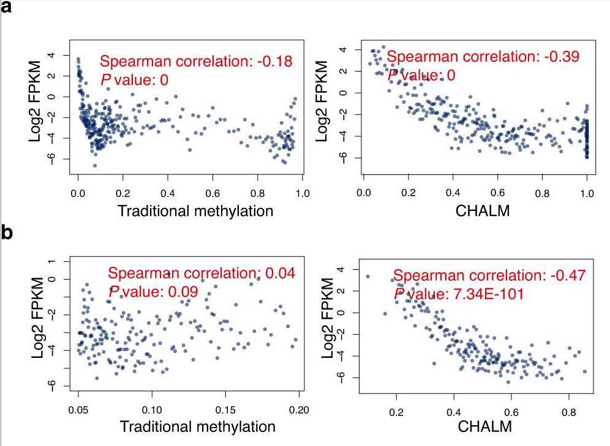
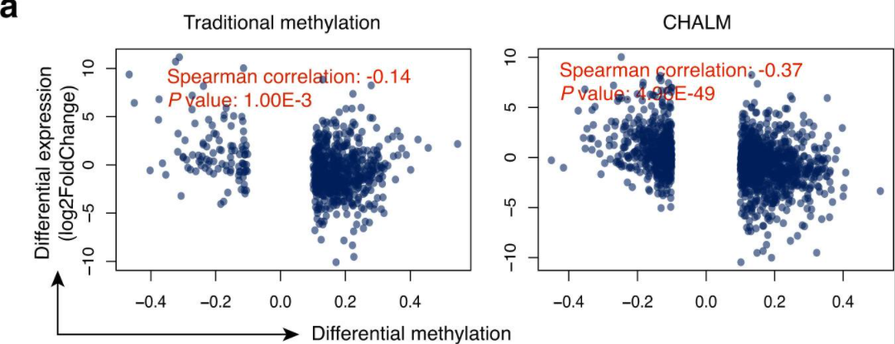

count: false class: left, bottom # Journal club ## January 25, 2021 <img src="bristol-logo.png" width="20%"> <img src="ieu-logo.png" width="17%"> --- layout: true .logo[.mrcieu[ MRC Integrative Epidemiology Unit ]] --- ## EWAS of age .striped[ | pmid|journal |variable |tissue |n |cohort |assocs |notes | |--------:|:-----------------|:---------------------------------------|:--------------------------------|:-------------------------|:------------------------|:--------------|:------------------------------------------------------------------------------------------| | 33468710|Aging (Albany NY) |age |lung |fetal (120); adult (275) |Adult Lung Tissue study |244 |21 age x sex and 11 age x pack-years in adult lung | | 33450751|Hum Mol Genet |age trajectories from birth to 17 |blood |2348 |Generation R and ALSPAC |50% of 485K |non-linear change at 11% | ] --- ## EWAS of pregnancy .striped[ | pmid|journal |variable |tissue |n |cohort |assocs |notes | |--------:|:-----------------|:---------------------------------------|:--------------------------------|:-------------------------|:------------------------|:--------------|:------------------------------------------------------------------------------------------| | 33414500|Mol Psychiatry |prenatal anxiety |cord blood |7243 |PACE study of 12 cohorts |null |21 associations observed in individual studies | | 33431374|Diabetes |dietary advice for obese pregnant women |offspring cord blood |208 |TOP study |379 |dietary advice offspring had higher lean mass | | 33436068|Clin Epigenetics |rapid infant weight gain |blood |125 age 7; 96 adolescents |ALSPAC |2;0 |1 site replicated | | 33448462|Birth |blood pressure in pregnancy |saliva 3-5 years after pregnancy |179 mothers |InterGEN |null |high blood pressure in pregnancy was associated with higher blood pressure 3-5 years later | ] --- ## EWAS of phenotypes .striped[ | pmid|journal |variable |tissue |n |cohort |assocs |notes | |--------:|:-----------------|:---------------------------------------|:--------------------------------|:-------------------------|:------------------------|:--------------|:------------------------------------------------------------------------------------------| | 33420481|Mol Psychiatry |aggression |peripheral blood |14434 age 7-68 years |PACE study of 18 cohorts |13 | | | | | |cord blood |2425 |5 cohorts |null |effect estimates for 13 sites correlated at R=0.74 | | 33443234|Thorax |airflow obstruction |blood |161 people with HIV | |4676 |enriched in chronic viral infections pathways | | 33414392|Transl Psychiatry |bipolar personality disorder |blood |96 vs 44 controls | |6 |5 on the X chromosome; 2 replicated | | | |BPD with trauma |blood |49 vs 47 no trauma | |null | | | 33413638|Clin Epigenetics |226 NMR metabolites |blood |1662 |KORA F4 |274 (24 sites) |161 replicated in LOLIPOP/NFBC1966/YFS (n=3752) | ] --- -- .rightmid[.box[ Two hypotheses: * "a good person's histile act" * "a victim who 'deserved' the hostility" Both were confirmed by 192 undergraduates. ]] --- ## Multi-omics driven by MR > Korologou-Linden R, Leyden GM, Relton CL, Richmond RC, Richardson TG. **Multi-omics analyses of cognitive traits and psychiatric disorders highlights brain-dependent mechanisms.** Hum Mol Genet. 2021 Jan 22:ddab016. *Question* genetic variation -> brain gene expression -> cognitive and psychological outcomes? Is it brain-specific? Is DNAm involved? -- *Data* * GWAS summary data for outcomes * Brain eQTL and meQTL summary data * Whole blood eQTL summary data -- *Results* (highlights) 1. Expression of 83 genes in brain associated with outcomes 2. 58.2% of these effects replicated in blood 3. Brain DNA methylation involved in 9 of these effects 4. *FURIN* linked to schizophrenia risk also had effect on 28 other outcomes --- ## Multi-omics for 'n-of-1' > Mias GI, Singh VV, Rogers LRK, Xue S, Zheng M, Domanskyi S, Kanada M, Piermarocchi C, He J. **Longitudinal saliva omics responses to immune perturbation: a case study.** Sci Rep. 2021 Jan 12;11(1):710. *Question* What is the immediate effect of vaccination on the saliva transcriptome? *Data* Saliva mRNA, miRNA, piRNA, bacterial RNA, proteome from collections 1. every hour for 24 hours 2. every hour for 24 hours including immunization 3. every day for 33 days *Results* (highlights) - mRNA had the most specific and sensitive response to immunization - perturbations coincided with vaccination and fever -- .rightmid[ <br>mRNA data Day 2 (immunization) - Day 1 (Figure 5c) ] -- .rightmid[ <img src="saliva.png" style="width:100%"> <br>mRNA data Day 2 (immunization) - Day 1 (Figure 5c) ] --- .larger[ Why are some politicians not afraid of covid? ] -- .larger[ .center[<p style="color: #712121;"> **Because they have diplomatic immunity.** ]] -- .larger[ Have you noticed that covid infections tend to occur on weekdays? ] -- .larger[ .center[<p style="color: #217121;"> **We think it might be due to our weekend immune systems.** ]] -- .larger[ Did you hear about the new covid treatment that uses ants? ] .larger[ .center[<p style="color: #212171;"> **It uses their teeny tiny antibodies.** ]] --- ## PhenoAge, GrimAge and cancer risk > Dugué PA, Bassett JK, Wong EM, Joo JE, Li S, Yu C, Schmidt DF, Makalic E, Doo NW, Buchanan DD, Hodge AM, English DR, Hopper JL, Giles GG, Southey MC, Milne RL. **Biological Aging Measures Based on Blood DNA Methylation and Risk of Cancer: A Prospective Study.** JNCI Cancer Spectr. 2020 Nov 16;5(1):pkaa109. PhenoAge, GrimAge and DNAm estimate of telomere length in Melbourne Collaborative Study participants (n=2994; n=139-846 per cancer) --- <br> <br> <br> <br> .larger[I mapped facial expressions to DNAm age acceleration estimates to make interpretation easier. Can you guess which expression shows a very short time until death?] -- .larger[ .center[<p style="color: #712121;"> **A Grimage.** ]] --- ## How does smoking look in gene expression? > Baiju N, Sandanger TM, Sætrom P, Nøst TH. **Gene expression in blood reflects smoking exposure among cancer-free women in the Norwegian Women and Cancer (NOWAC) postgenome cohort.** Sci Rep. 2021 Jan 12;11(1):680. *Data*: Whole blood gene expression (n=1708 women) -- *Results* - current vs never: 911 differentially expressed genes - current vs former: 1082 - former vs never: null - strongest association *LRRN3* gene (p=1.8e-84) - next strongest *PID1* (p=8.9e-33) -- My quick comparison to methylation - p < 1.6e-5 (Fisher's test for overlap with methylation (Joehanes, 2016)) - AHRR not differentially expressed --- ## Gene expression and DNA methylation are more correlated than you thought > Xu J, Shi J, Cui X, Cui Y, Li JJ, Goel A, Chen X, Issa JP, Su J, Li W. **Cellular Heterogeneity-Adjusted cLonal Methylation (CHALM) improves prediction of gene expression.** Nat Commun. 2021 Jan 15;12(1):400. Not much we can do about Illumina Beadchip data, but, if we have bisulfite sequencing data, then we can quantify DNA methylation 'correctly' ... -- --- .. and correlation with gene expression improves ...<br>  --- ... and correlation with differentialy gene expression improves ...<br>  --- <br> .larger[ DNA is a like a conversation with a child.] -- .larger[ - long, - highly-repetitive, - mostly uninterpretable, - largely without significance] -- .larger[ - **but** interspersed with short bits of life-or-death information - that can be detected only by highly-evolved mechanisms - using surprising amounts of energy. ] --- ## The journal club files have moved! **Past presentations are here:** https://mrcieu.github.io/epigenetics-journal-club/ **It now has a github repository:** <br> *(for generating candidate papers and saving presented papers)* https://github.com/MRCIEU/epigenetics-journal-club/ e.g. spreadsheet listing presented papers https://github.com/MRCIEU/epigenetics-journal-club/blob/main/data/papers.csv .right[<img src="octocat.png" style="width: 50%">]